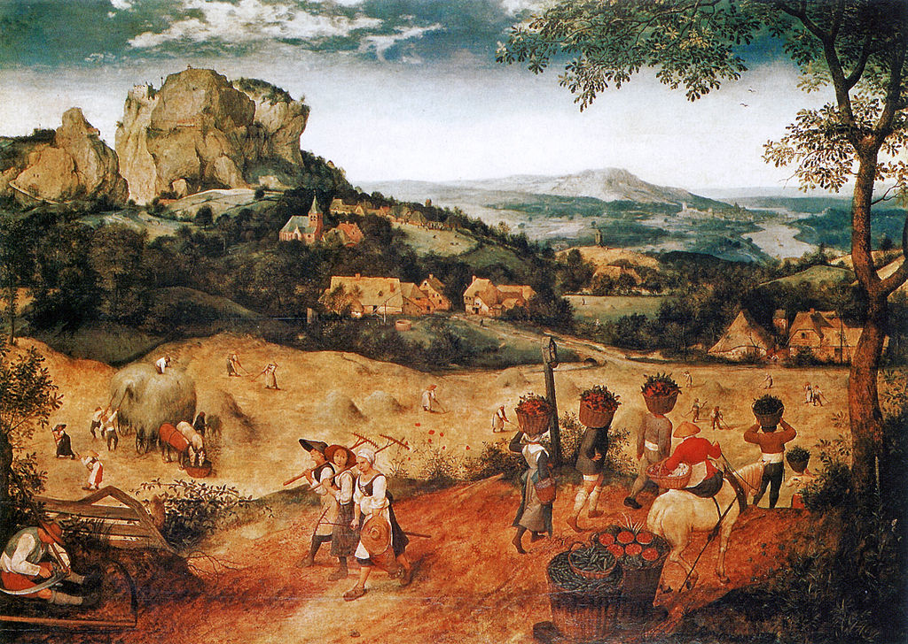

<head>
<meta charset="UTF-8" />
<meta name="keywords" content="drawing, painting" />
<meta name="description" content="drawings by Sunjy" />
<title>Sunjy</title>
<link rel="shortcut icon" type="image/x-icon" href="../../mImages/mCommon/favicon.ico" media="screen" />
<link rel="stylesheet" type="text/css" href="../../mCsses/mCommon/mCssA.css" />
<link rel="stylesheet" type="text/css" href="../../mCsses/mCommon/mCssB.css" />
<link rel="stylesheet" type="text/css" href="../../mCsses/mCommon/mCssC.css" />
<link rel="stylesheet" type="text/css" href="../../mCsses/mCommon/mCssD.css" />
<link rel="stylesheet" type="text/css" href="../../mCsses/mContent/mCssA.css" />
<link rel="stylesheet" type="text/css" href="../../mCsses/mContent/mCssB.css" />
<link rel="stylesheet" type="text/css" href="../../mCsses/mContent/mCssC.css" />
<link rel="stylesheet" type="text/css" href="../../mCsses/mContent/mCssD.css" />
</head>
<script type="text/javascript" src="../../mScripts/mContent/mContentAA.js" /></script>
<script type="text/javascript" src="../../mScripts/mContent/mContentAB.js" /></script>
<script type="text/javascript" src="../../mScripts/mContent/mContentAC.js" /></script>
<script type="text/javascript" src="../../mScripts/mContent/mContentAD.js" /></script>
<script type="text/javascript"></script> 
<script type="text/javascript">
document.write('<div class="mImgAbsolute"></div>');
/*
document.write('<p class="mFontSizeBColor" />From a white paper...</p>');
document.write('<table class="center"><tr><td>');
document.write('');
document.write('</td></tr></table>');
*/
</script>


<script type="text/javascript">
document.write('<p class="mFontSizeBColor" />The Hay Harvest</p>');
document.write('<p class="mFontSizeSColor" />“The Hay Harvest” by Pieter Bruegel the Elder was in 1565, represent two months of the year, June and July. This panel belongs to the Months of the Year Cycle series created by Bruegel, illustrating the months of the harvest.<br><br>Bringing-in the harvest is not just the grain; the foreground shows vegetables and berries as well. While each painting in the cycle series shows the traditional work of months, Bruegel also featured the changing landscape and its ever-changing appearance.<br><br>Human activity is integrated with the life of the cycles of the landscape, which dictate people’s work on the land.<br></p>');
document.write('<table class="center" /><tr><td>');
document.write('<br>Bringing-in the harvest is not just the grain; the foreground shows vegetables and berries as well. While each painting in the cycle series shows the traditional work of months, Bruegel also featured the changing landscape and its ever-changing appearance.<br><br>Human activity is integrated with the life of the cycles of the landscape, which dictate people’s work on the land.<br>" />');
document.write('</td></tr></table>');
</script>


